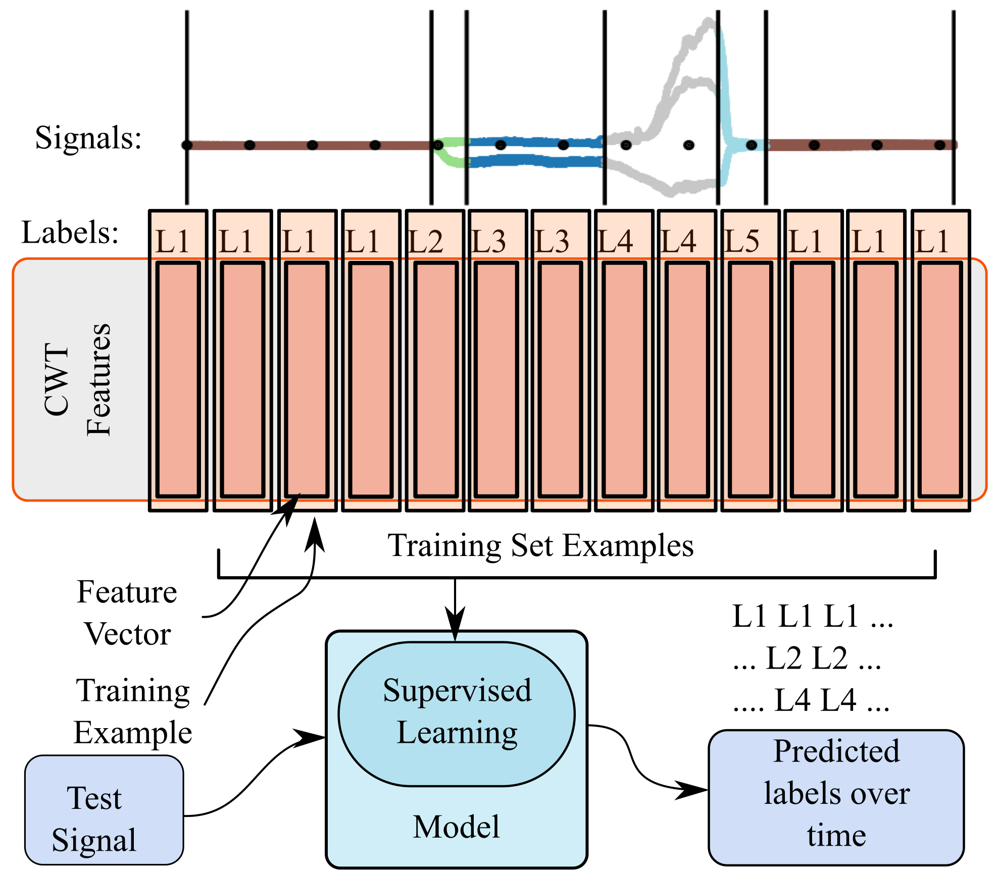
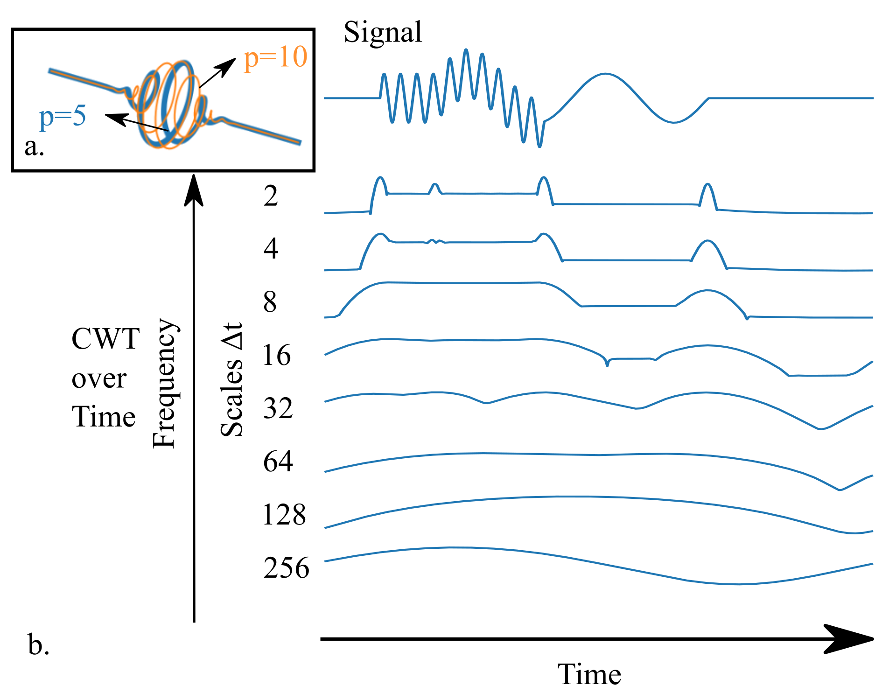
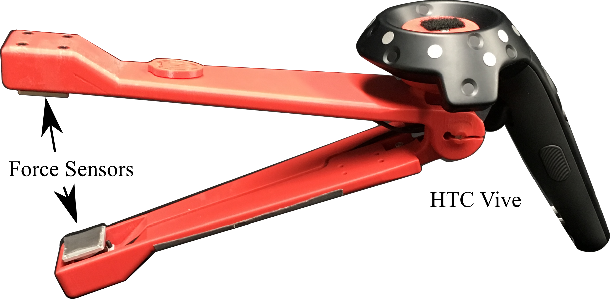
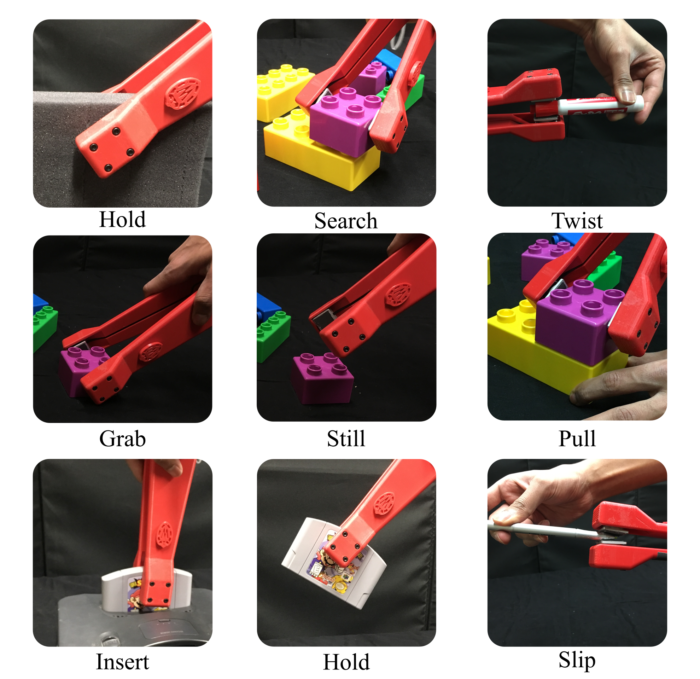
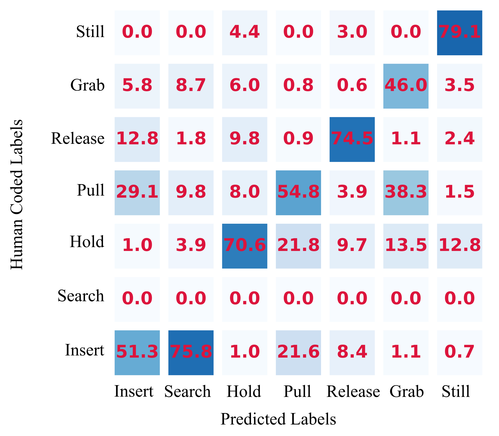
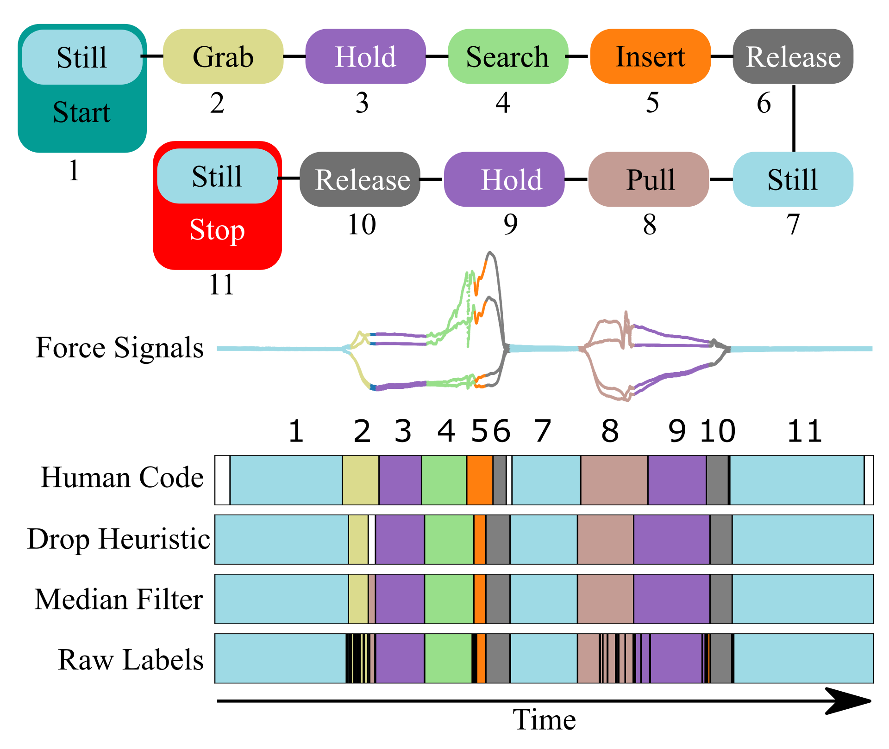
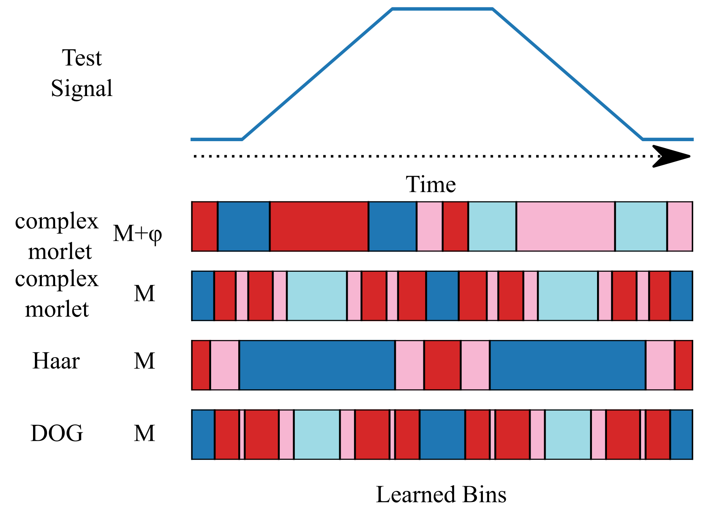

Overview
Currently, there is no generalized method for recognizing different types of tactile force actions from sensor data. Each task requires custom algorithms—recognizing a bottle twist versus a button push demands drastically different signal processing techniques.
This work introduces the first generalized method for robust recognition and temporal localization of tactile force events in human demonstrations using the Continuous Wavelet Transform (CWT) with the Complex Morlet wavelet.

Key Insight
The central breakthrough is representing every sample instance of a force signal with k features that describe the neighborhood around that time point—without any explicit windowing.
The CWT with Complex Morlet wavelets effectively summarizes vibration and transient signal phenomena around each time step. Unlike Short-Time Fourier Transform (STFT), this approach avoids windowing effects entirely.
- Each time step gets a k-length feature descriptor from the CWT
- Vector-valued signals (force + torque) produce concatenated m × k feature vectors
- Every time step can be classified independently
- Training requires only N pairs of feature vectors and action labels

Experimental Setup
The method was validated using an instrumented set of tongs equipped with multi-axis force sensors, allowing capture of both normal and tangential force components during manipulation tasks.


Technical Implementation
- Sensors: Optoforce multi-axis force/torque sensors (6D → 4D signals)
- Tracking: HTC Vive VR controller for 6DOF pose
- Data Collection: ROS framework for synchronized recording
- Classification: Neural network with 100 hidden neurons (scikit-learn)
- Post-processing: Median filter (window=10) + probability thresholding (80%)
Key Results
1. Cross-Object Generalization
The method successfully generalizes across different objects. Training on LEGO block assembly and testing on Nintendo 64 cartridge insertion achieved strong performance, demonstrating the transferability of learned force action representations.

2. Timeline Action Recognition
The system accurately identifies action sequences in continuous manipulation demonstrations, providing both action type and temporal localization.

3. Wavelet Comparison Study
Comprehensive comparison with other wavelets (Derivative of Gaussian, Haar, Real Morlet) confirmed that the Complex Morlet wavelet provides superior performance for force action recognition tasks.

Applications Demonstrated
- Peg-in-hole insertion: Nintendo 64 cartridge, LEGO block assembly
- Slip detection: Stylus sliding, controlled slip events
- Friction analysis: Dry erase marker cap rotation
- Material discrimination: Hard vs. soft object classification
- Contact detection: Touch, press, release actions
Impact & Applications
This work enables learning by demonstration systems to understand not just what forces to apply, but what actions are being performed. This higher-level understanding allows robots to:
- Make informed decisions when demonstrations are incomplete or corrupted
- Leverage past experiences for novel task composition
- Recognize and adapt to different interaction contexts
- Provide automated analysis and diagnostics for manipulation tasks
The method's real-time potential and generalization across objects make it suitable for industrial automation, robotic assembly, and human-robot interaction scenarios where tactile understanding is critical.